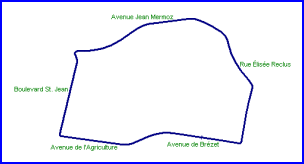
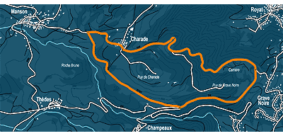
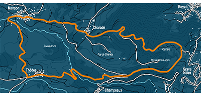
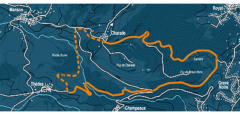
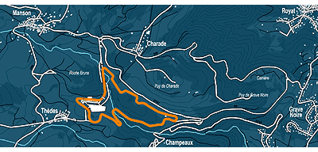

In 1954, The "Association Sportive de l'Automobile Club
d'Auvergne" (ASACA), based in Clermont-Ferrand and headed by Jean Auchataire (who
died in 2002), decided to create a street circuit in the city, with first race scheduled
for July 1955

The proposed street circuit in Clermont-Ferrand
However, following the Le Mans disaster of 1955, all the french car
meetings were canceled, including Clermont-Ferrand. The following year, The French
Federation asked Jean Auchataire to create a mountain track, a "french
Nürburgring". The famous driver Louis Rosier assisted Auchataire in finding a
possible track close to the famous Puy de Dome mountain, located around two extinct volcanoes; the Puy de Charade and the Puy de
Grave Noire (“small black stones”). The circuit also passed through the hamlet
of Charade (means "riddle" in French)

The track suggested by Louis Rosier
But it was impossible to install the pits and grandstands on this
track, so Jean Auchataire planned an extended track using the best parts of Rosier's
proposal, but now passing through the villages of Thèdes and Manson.

The extended track planned by Jean Auchataire
Whilst visiting the area, Raymond "Toto" Roche, the
director of the picturesque Reims
circuit,commented:
"Forget the idea of passing through the 2 villages of Manson
and Thèdes, you will not have the right to race through them. Build a specific road
between the Tertre de Thèdes and the village of Charade and you will have a wonderful
track."

The track finally adopted with the specially built section as
suggested by Raymond Roche
The inaugural meeting of the new 8.055 km long Charade circuit was
held in 1958, the first "Trophées d'Auvergne". Innes Ireland won the race with
his 1100cc Lotus Eleven. Sadly, Louis Rosier never saw this first race, having died
following a crash at Montlhéry in 1956.
The following year in 1959, Stirling Moss contested his first race at
Charade. Most impressed, he declared: "I don't know a more wonderful track than
Charade". Tragically former Le Mans 24 hour winner Ivor Bueb died following a
crash at Gravenoire. He was the only driver to have lost his life at the circuit. Also
this year, The French Motorcycle Grand Prix was held at the circuit for the first time and
would continue to host this race periodically up until 1974.
In 1965, Charade hosted the French
Formula 1 Grand Prix. The race was won by Jim Clark (Lotus Climax), who dominated the
event from start to finish. The Grand Prix returned four years later, with the race this
time been won by Jackie Stewart's Matra MS 80. When plans to hold the Grand Prix at Albi in 1970 fell through, the race returned for the
third time to Charade, with Jochen Rindt (Lotus 72) victorious.
The final Grand Prix was held at Charade in 1972. Jackie Stewart
(Tyrell 003).was triumphant once again, with the outright lap record been set during this
event by Chris Amon's Matra MS120D at a fabulous 2m 53.9s - 103.614mph / 166.751km/h!
Unfortunately, during this race Helmut Marko received a flying stone in one eye which put
an end to his racing carreer. These small sharp stones were a great problem of the Charade
circuit, falling from the mountain on both side of the track. Drivers who didn't respect
the two white lines bordering the track would send stones flying in the middle of the road
and over the cars.
In 1980, three marshalls were killed at the left curve after Manson
when two cars in the "Coupe de France Renault 5 Elf" crashed at this corner.
The long Charade course was abandonned in 1989 when a new track was
developed which was shorter (4.05 km) but safer and easier to control. A nice track but
can't be compared with the previous one.

The actual track used since 1989
In 2002 a compromise was reached with the local neighbours of
the track. Only 7 days of racing are now permitted each year, and new installations have
been installed. The entire circuit is now closed to ordinary traffic.
Maps and
text ©Franck RIVE. Reproduced here with kind permission. No unauthourised reproduction is permitted.